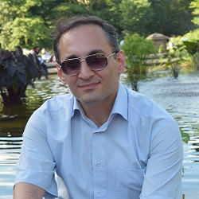
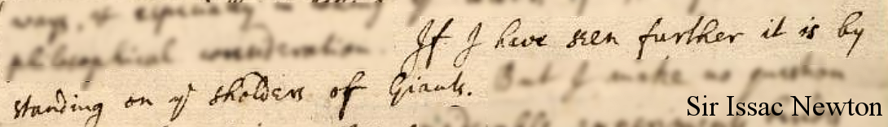

Reza Ahmadzadeh
Post-Doctoral Research Fellow

Currently, I am a post-doctoral research fellow with the Institute for Robotics and Intelligent Machines (IRIM) at Georgia Tech working with Prof. Sonia Chernova. I am also a member of the Robot Autonomy and Interactive Learning (RAIL) research lab.
Some useful links:
 My personal website
My personal website My GeorgiaTech webpage
My GeorgiaTech webpage Selected Publications
Selected Publications
Latest Publications:
- S. R. Ahmadzadeh, R. Kaushik, S. Chernova, "Trajectory Learning from Demonstration with Canal Surfaces: A Parameter-free Approach", In Proc. 16th IEEE-RAS Intl Conf. on Humanoid Robots (Humanoids 2016), Cancun, Mexico, pp. 1-7, 15-17 Nov. 2016. [pdf]
- S. R. Ahmadzadeh, S. Chernova, "Encoding Demonstrations and Learning New Trajectories using Canal Surfaces", In Proc. 25th Int. joint Conf. on Artificial Intelligence (IJCAI 2016), Workshop on Interactive Machine Learning: Connecting Humans and Machines, New York City, USA, 9th-15th July 2016. [website][pdf]
- S. R. Ahmadzadeh, S. Chernova, "A Geometric Approach for Encoding Demonstrations and Learning New Trajectories", In Proc. Robotics: Science and Systems (RSS 2016), Workshop on Planning for Human-Robot Interaction: Shared Autonomy and Collaborative Robotics, Ann Arbor, Michigan, USA, 18-22 June 2016. [pdf]
- S. R. Ahmadzadeh, P. Kormushev, " Visuospatial Skill Learning", in Handling Uncertainty and Networked Structure in Robot Control, Eds. L. Busoniu, L. Tamás, Springer Studies in Systems, Decision and Control, pp. 3-28, 2016.
- P. Kormushev, S. R. Ahmadzadeh, "Robot Learning for Persistent Autonomy", in Handling Uncertainty and Networked Structure in Robot Control, Eds. L. Busoniu, L. Tamás, Springer Studies in Systems, Decision and Control, pp. 75-99, 2016.
- S. R. Ahmadzadeh, A. Paikan, F. Mastrogiovanni, L. Natale, P. Kormushev, D. G. Caldwell, "Learning Symbolic Representations of Actions from Human Demonstrations", In Proc. IEEE Intl Conf. on Robotics and Automation, (ICRA 2015), Seattle, Washington, 26-30 May 2015. [pdf]
- S. R. Ahmadzadeh, P. Kormushev, R. S. Jamisola Jr., and Darwin G. Caldwell, "Learning Reactive Robot Behavior for Autonomous Valve Turning", In Proc. 14th IEEE-RAS Intl Conf. on Humanoid Robots (Humanoids 2014), Madrid, Spain, pp. 366-373, 18-20 Nov. 2014.[pdf]
- S. R. Ahmadzadeh, P. Kormushev, D. G. Caldwell, "Multi-Objective Reinforcement Learning for AUV Thruster Failure Recovery", In Proc. IEEE Symp. Series on Adaptive Dynamic Programming and Reinforcement Learning (ADPRL 2014), IEEE Symp. Series on Computational Intelligence (SSCI 2014), Orlando, Florida, USA, 8-12 Dec. 2014. [pdf]
- S. R. Ahmadzadeh, M. Leonetti, A. Carrera, M. Carreras, P. Kormushev, D. G. Caldwell, "Online Discovery of AUV Control Policies to Overcome Thruster Failures", In Proc. IEEE Intl Conf. on Robotics and Automation, (ICRA 2014), Hong Kong, China, pp. 6522-6528, 31 May-7 June 2014.
- N. Jamali, P. Kormushev, S. R. Ahmadzadeh, D. G. Caldwell, "Covariance Analysis as a Measure of Policy Robustness in Reinforcement Learning", In Proc. MTS/IEEE Intl Conf. OCEANS 2014, Taipei, Taiwan, 7-10 Apr. 2014.
- S. R. Ahmadzadeh, P. Kormushev, D. G. Caldwell, "Interactive Robot Learning of Visuospatial Skills", In Proc. 16th IEEE Intl Conf. on Advanced Robotics (ICAR 2013), Montevideo, Uruguay, 25-29 Nov. 2013.
- S. R. Ahmadzadeh, M. Leonetti, P. Kormushev, "Online Direct Policy Search for Thruster Failure Recovery in Autonomous Underwater Vehicles", In Proc. 6th Intl Workshop on Evolutionary and Reinforcement Learning for Autonomous Robot Systems (ERLARS 2013), 12th European Conf. on Artificial Life (ECAL 2013), Taormina, Italy, 2-9 Sept. 2013.
- S. R. Ahmadzadeh, P. Kormushev, D. G. Caldwell, "Visuospatial Skill Learning for Object Reconfiguration Tasks", In Proc. IEEE/RSJ Intl Conf. on Intelligent Robots and Systems (IROS 2013), Tokyo, Japan, pp. 685-691, 3-8 Nov. 2013.
- M. Leonetti, S. R. Ahmadzadeh, P. Kormushev, "On-line Learning to Recover from Thruster Failures on Autonomous Underwater Vehicles", In Proc. MTS/IEEE Intl Conf. OCEANS 2013, San Diego, USA, 23-26 Sept. 2013.
- S. R. Ahmadzadeh, P. Kormushev, D. G. Caldwell, "Autonomous Robotic Valve Turning: A Hierarchical Learning Approach", In Proc. IEEE Intl Conf. on Robotics and Automation, (ICRA 2013), Karlsruhe, Germany, pp. 4614-4619, 6-11 May 2013.
- A. Carrera, S. R. Ahmadzadeh, A. Ajoudani, P. Kormushev, M. Carreras and D. G. Caldwell, "Towards Autonomous Robotic Valve Turning", In Cybernetics and Information Technologies (CIT), Vol. 12, no. 3, pp. 17-26, 2012.
- S. R. Ahmadzadeh, S. Hasanzadeh, "Design of a TSK Fuzzy Controller for Active Suspension System and Compare the Results with the Linear Feedback Controller Actions", In Proc. 6th Annu. Student Conf. of Mechanical Engineering (STU 2009), Tehran, Iran, Feb 2009.
- S. R. Ahmadzadeh, "Modeling of Hyper-Redundant Manipulators Dynamics and Design of Fuzzy Controller for the System", In Proc. IEEE Intl Conf. of Integration of Knowledge Intensive Multi-Agent Systems (KIMAS 2005), Waltham, MA, USA, pp. 248-253, 18-21 Apr. 2005.
- S. R. Ahmadzadeh, M.A. Hajabasi, "Controller Design for Hyper-Redundant Manipulator Using Backbone Curve", In Proc. 8th Intl Conf. of Mechanics, Tehran, Iran, 2003.
- S.R. Ahmadzadeh, "Robot Learning of Reactive and Visuospatial Skills", Ph.D. Thesis, University of Genoa and Learning and Interaction Group, Dept. Advanced Robotics, Italian Institute of Technology (IIT), Genoa, Italy, April. 2015.
- S.R. Ahmadzadeh, "Modal Approach to Modeling of Hyper-Redundant Robot Manipulators Dynamics and Design of Fuzzy Controller for the System", M.Sc. Thesis, Dept. Mechanical Eng., Bahonar University, Kerman, Iran, Jan. 2004.[abstract]
Contact:
Reza Ahmadzadeh, Ph.D.
Institute for Robotics & Intelligent Machines (IRIM)
College of Computing,
School of Interactive Computing,
Georgia Institute of Technology
801 Atnaltic DR, NW, CCB 255,
Atlanta, GA 30332-5682
reza.ahmadzadeh{at}gatech.edu
